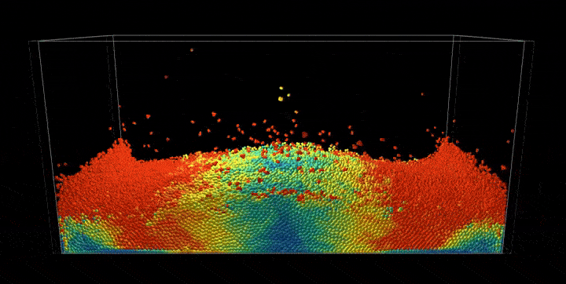
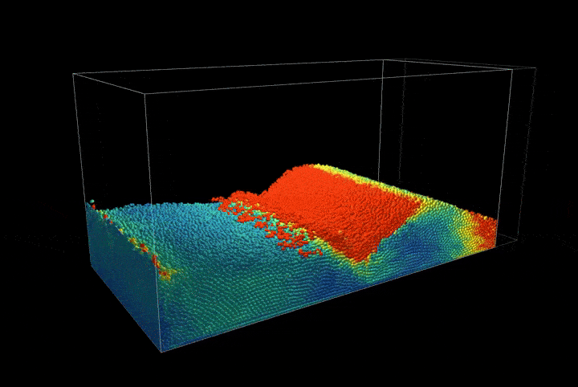

完整 PBF 仿真
现在，我们把已实现的密度约束、拉伸不稳定性修正与高级流体效果结合起来，构建一个完整的基于位置的流体仿真。主仿真循环迭代求解密度约束，然后施加流体特有的增强处理。
def substep():
"""Complete PBF simulation integrating all components"""
if simulation_running[None]:
# Standard PBD pre-solve: external forces and neighbor search
pre_solve()
# Standard PBD constraint solving loop
for _ in range(pbf_num_iters):
solve_density_constraints() # Density constraints with tensile instability correction
# Standard PBD post-solve: velocity updates
post_solve()
# Fluid-specific enhancements (beyond standard PBD)
calculate_vorticity()
apply_vorticity_confinement()
apply_xsph_viscosity()
该求解器遵循标准的基于位置的动力学（Position-Based Dynamics，PBD）流程，但额外加入了流体特有的增强处理。密度约束被迭代求解以施加不可压缩性，随后涡量约束与 XSPH 粘性带来逼真的流体行为。
该仿真包含带有移动墙壁的动态边界条件，以支持压缩场景：
@ti.kernel
def move_wall():
"""Move the wall for compression scenario"""
if wall_moving[None]:
wall_pos[None] += wall_velocity[None] * dt
if wall_pos[None] > wall_max_pos[None]:
wall_pos[None] = wall_max_pos[None]
wall_velocity[None] = -wall_velocity[None]
elif wall_pos[None] < wall_min_pos[None]:
wall_pos[None] = wall_min_pos[None]
wall_velocity[None] = -wall_velocity[None]
这构成一个墙壁往复振荡的压缩场景，展示了该方法处理复杂边界交互的能力。
该仿真使用空间哈希来高效地查找邻居：
@ti.kernel
def build_hash_grid():
"""Build spatial hash grid for neighbor finding"""
grid_cell_counts.fill(0)
for i in range(num_particles):
cell = get_grid_cell(pos[i])
ti.atomic_add(grid_cell_counts[cell], 1)
# Build prefix sum for cell starts
total_particles = 0
counts_np = grid_cell_counts.to_numpy()
starts_np = np.zeros_like(counts_np)
for i in range(GRID_SIZE):
for j in range(GRID_SIZE):
for k in range(GRID_SIZE):
starts_np[i, j, k] = total_particles
total_particles += counts_np[i, j, k]
grid_cell_starts.from_numpy(starts_np)
这种空间加速结构使密度约束求解过程中的邻居查找变得高效，从而使仿真可以扩展到大量粒子。
仿真结果
完整的基于位置的流体（Position-Based Fluids，PBF）实现通过几何约束展现了逼真的流体行为，呈现出不可压缩流动、表面张力效应以及流体与动态边界之间的复杂交互。

